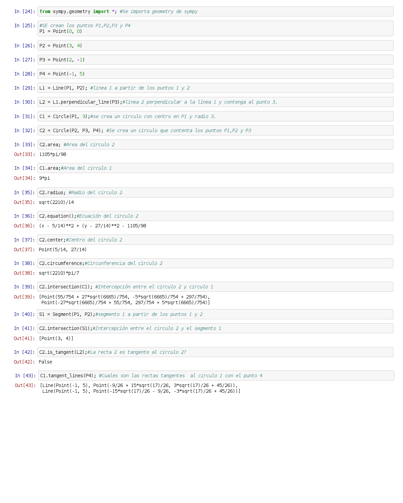

Geometría Analítica con Sympy (circulos)
Posted on Mon 02 March 2015 in Tutorial Python • 2 min read
A continuación se tiene los artículos sobre sympy tratados anteriorente:
- Cálculo de límites con sympy
- Cálculo de derivadas con sympy
- Cálculo de integrales con sympy
- Resolución de sistemas de ecuaciones lineales con sympy
- Geometría Analítica con sympy (segmentos)
- Geometría Analítica con sympy (rectas)
En este artículo se explicará las instrucciones de geometría analítica para el caso del circulo.
A continuación el código del script:
#!/usr/bin/env python
from sympy.geometry import *; #Se importa geometry de sympy
#SE crean los puntos P1,P2,P3 y P4
P1 = Point(0, 0)
P2 = Point(3, 4)
P3 = Point(2, -1)
P4 = Point(-1, 5)
L1 = Line(P1, P2); #linea 1 a partir de los puntos 1 y 2
L2 = L1.perpendicular_line(P3);#linea 2 perpendicular a la linea 1 y contenga al punto 3.
C1 = Circle(P1, 3);#se crea un circulo con centro en P1 y radio 3.
C2 = Circle(P2, P3, P4); #Se crea un circulo que contenta los puntos P1,P2 y P3
print (C2.area); #Area del circulo 2
print (C1.area);#Area del circulo 1
print (C2.radius); #Radio del circulo 2
print (C2.equation());#Ecuacion del circulo 2
print (C2.center);#Centro del circulo 2
print (C2.circumference);#Circunferencia del circulo 2
print (C2.intersection(C1)); #Intercepcion entre el circulo 2 y circulo 1
S1 = Segment(P1, P2);#segmento 1 a partir de los puntos 1 y 2
print (C2.intersection(S1));#Intercepcion entre el circulo 2 y el segmento 1
print (C2.is_tangent(L2));#La recta 2 es tangente al circulo 2?
print (C1.tangent_lines(P4)); #Cuales son las rectas tangentes al circulo 1 con el punto 4
El resultado de la ejecución del script es el siguiente:
1105*pi/98
9*pi
sqrt(2210)/14
(x - 5/14)**2 + (y - 27/14)**2 - 1105/98
Point(5/14, 27/14)
sqrt(2210)*pi/7
[Point(55/754 + 27*sqrt(6665)/754, -5*sqrt(6665)/754 + 297/754), Point(-27*sqrt(6665)/754 + 55/754, 297/754 + 5*sqrt(6665)/754)]
[Point(3, 4)]
False
[Line(Point(-1, 5), Point(-9/26 + 15*sqrt(17)/26, 3*sqrt(17)/26 + 45/26)), Line(Point(-1, 5), Point(-15*sqrt(17)/26 - 9/26, -3*sqrt(17)/26 + 45/26))]
A continuación se muestra una imagen del proceso de ejecución de ipython notebook:

¡Haz tu donativo! Si te gustó el artículo puedes realizar un donativo con Bitcoin (BTC) usando la billetera digital de tu preferencia a la siguiente dirección: 17MtNybhdkA9GV3UNS6BTwPcuhjXoPrSzV
O Escaneando el código QR desde la billetera: